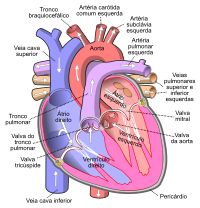
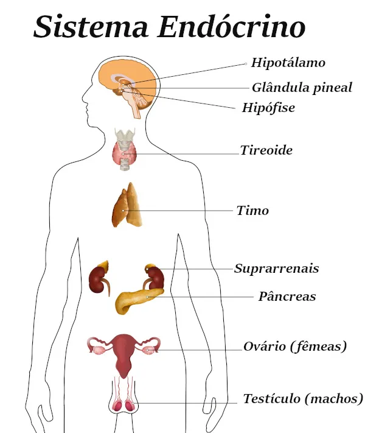
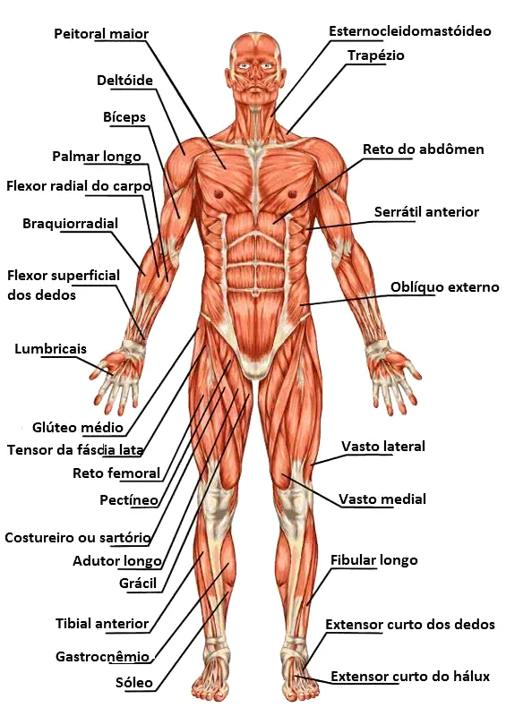
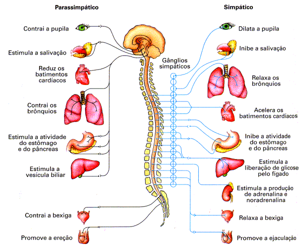

Os órgãos do corpo estão associadas frequentemente em sistemas, os quais são a reunião de estruturas que cooperam entre si para realizar funções complexas e consideráveis dentro do organismo. Existem vários sistemas que são necessários para a sobrevivência da espécie,[79] cada um tendo funções diferentes, e portanto, papéis exclusivos para desempenhar na fisiologia.[80] São eles: o circulatório (dividido em dois outros sistemas para fins de pesquisa: cardiovascular, responsável por transportar nutrientes e oxigênio para todas as células através do sangue e o linfático que recolhe as impurezas e conduz os glóbulos brancos e vários outros, através da linfa),[81] digestivo (onde acontece a transformação dos alimentos em nutrientes e, a eliminação do não necessário através das fezes), endócrino (faz a regulação e administração das funções do corpo através de glândulas, que produzem e liberam hormônios), imunológico (defende o organismo da invasão de patógenos), tegumentar (protege do mundo exterior, regula a temperatura corporal e é responsável pela sensibilidade), locomotor ou musculoesquelético (fornece a estrutura e locomoção, também é dividido em dois outros sistemas que são o muscular e esquelético),[82] nervoso (centro de controle do corpo, incumbido pela transmissão de sinais), reprodutor (garante a descendência da espécie através dos gametas, que posteriormente pós fertilização transformará em um embrião no útero), respiratório (traz oxigênio do ar para o organismo) e urinário (filtra o sangue e remove as toxinas e resíduos, transformando em urina).[83][84]
Alguns órgãos do corpo têm múltiplas funções e fazem partes de mais de um sistema, enquanto outros apresentam somente uma função para tal.[83] Por exemplo: o timo faz parte do sistema linfático e imunológico,[85] os ovários integram o reprodutor e endócrino,[86] a faringe pertence ao respiratório e digestivo.[87]
Os sistemas interagem efetivamente entre si, essas interações possuem regras básicas, ou seja latentes à complexa reorganização hierárquica em redes fisiológicas com transições entre estados fisiológicos. A saúde e os estados fisiológicos diferentes surgem de interações em rede entre sistemas complexos de vários componentes não lineares. Os médicos tradicionalmente focam em um único sistema, por exemplo: os cardiologistas examinam o coração e consideram os sinais do ECG; neurologistas trabalham com o cérebro e utilizam sinais de ressonância magnética e ondas cerebrais EEG. Entretanto, o organismo é uma rede integrada, os quais os sistemas formados por várias estruturas fazem contato continuamente através de vários procedimentos por meio de várias respostas adquiridas e em diferentes escalas temporais para aperfeiçoar e coordenar sua função. Essas interações são essenciais para manter a saúde e gerar estados fisiológicos distintos, tal como a vigília e sono, sono leve e profundo, consciência e inconsciência. A modificação ou a interrupção das comunicações dos órgãos podem levar a disfunção de sistemas individuais ou ao colapso de todo o organismo, por exemplo: febre, hipertensão e falência de múltiplos órgãos, mas, apesar da importância para a cognição das funções fisiológicas básicas, há escassez sobre a natureza das interações dinâmicas entre diversos sistemas e seu papel coletivo como uma rede integrada de saúde.[88]O vocábulo "sistema" vem do grego, e é originário de SÍSTANAI que é a junção de SYN, que significa "reunião ou conjunto" e HÍSTANAI, em tradução literal "levar exercer", sendo assim a palavra SYNISTANAI retrata "levar exercer em conjunto". Com base nessa palavra surgiu SYSTEMA, significando a "associação de diferentes partes".[89][90]
A seguir abordaremos os seguintes assuntos:
Diagrama do coração humano Ver artigo principal: Sistema circulatório O sistema circulatório consiste no coração e vasos sanguíneos (artérias, veias e capilares). O coração impulsiona a circulação do sangue, que serve como um "sistema de transporte" para transferir oxigênio, combustível, nutrientes, produtos residuais, células imunológicas e moléculas de sinalização (ou seja, hormônios) de uma parte do corpo para outra. Os caminhos da circulação sanguínea dentro do corpo humano podem ser divididos em dois circuitos: o circuito pulmonar, que bombeia sangue para os pulmões para receber oxigênio e deixar dióxido de carbono e o circuito sistêmico, que transporta o sangue do coração para o resto do corpo. O sangue consiste em um fluido que transporta as células na circulação, incluindo algumas que se movem dos tecidos para os vasos sanguíneos e vice-versa, assim como o baço e a medula óssea.[91][92][93]

A digestão começa na boca, que mastiga os alimentos em pedaços menores para facilitar a digestão. Em seguida, é engolido e passa pelo esôfago até o estômago. No estômago, o alimento é misturado aos ácidos gástricos para permitir a extração de nutrientes. O que resta é chamado de quimo; ele então se move para o intestino delgado, que absorve os nutrientes e a água do quimo. O que sobra segue para o intestino grosso, onde é seco para formar fezes; estes são então armazenados no reto até que sejam expelidos através do ânus.[95]
O sistema tegumentar consiste na cobertura do corpo (a pele), incluindo cabelos e unhas, bem como outras estruturas funcionalmente importantes, como as glândulas sudoríparas e as glândulas sebáceas. A pele fornece contenção, estrutura e proteção para outros órgãos e serve como uma importante interface sensorial com o mundo exterior.[98][99]
O sistema linfático extrai, transporta e metaboliza a linfa, o fluido encontrado entre as células. O sistema linfático é semelhante ao sistema circulatório em termos de estrutura e função mais básica, que é; transportar um fluido corporal.[100]
Ver artigo principal: Sistema endócrino O sistema endócrino consiste nas principais glândulas endócrinas: hipófise, tireóide, supra-renais, pâncreas, paratireoides e gônadas, mas quase todos os órgãos e tecidos também produzem hormônios endócrinos específicos. Os hormônios endócrinos servem como sinais de um sistema do corpo para outro em relação a uma enorme variedade de condições, resultando em uma variedade de mudanças de função.[96]
Um neutrófilo (amarelo) envolve uma bactéria de antraz (laranja), numa imagem obtida através de microscópio eletrónico de varrimento. Sistema imunológico Ver artigo principal: Sistema imunitário O sistema imunológico consiste em células brancas do sangue, o timo, os gânglios linfáticos e os canais linfáticos, que também fazem parte do sistema linfático. O sistema imunológico fornece um mecanismo para o corpo distinguir suas próprias células e tecidos de células e substâncias externas e neutralizar ou destruir as últimas usando proteínas especializadas, como anticorpos, citocinas e receptores do tipo-toll, entre muitos outros.[97]
O sistema locomotor consiste no esqueleto humano (que inclui ossos, ligamentos, tendões e cartilagem) e músculos. Dá estrutura básica ao corpo e capacidade de movimento. Além de seu papel estrutural, os ossos maiores do corpo contêm a medula óssea, o local de produção das células sanguíneas. Além disso, todos os ossos são os principais locais de armazenamento de cálcio e fosfato. Este sistema pode ser dividido entre sistema muscular e esquelético.[101]
O sistema nervoso consiste em neurônios e células gliais do corpo, que juntos formam os nervos, gânglios e massa cinzenta que, por sua vez, formam o cérebro e estruturas relacionadas. O cérebro é o órgão do pensamento, emoção, memória e processamento sensorial; serve a muitos aspectos da comunicação e controla vários sistemas e funções. Os sentidos consistem em visão, audição, paladar, olfato e tato. Os olhos, ouvidos, língua, nariz e pele, reúnem informações sobre o ambiente do corpo.[102] De uma perspectiva estrutural, o sistema nervoso é normalmente subdividido em duas partes componentes: o sistema nervoso central (SNC), composto pelo cérebro e pela medula espinhal; e o sistema nervoso periférico (SNP), composto pelos nervos e gânglios fora do cérebro e da medula espinhal. O SNC é o principal responsável por organizar o movimento, processar informações sensoriais, pensamento, memória, cognição e outras funções semelhantes.[103] Ainda é uma questão de debate se o SNC dá origem direta à consciência.[104] O sistema nervoso periférico (SNP), é o principal responsável por reunir informações com os neurônios sensoriais e dirigir os movimentos do corpo com os neurônios motores.[103] De uma perspectiva funcional, o sistema nervoso é novamente dividido em duas partes componentes: o sistema nervoso somático (SNS) e o sistema nervoso autônomo (SNA). O SNS está envolvido em funções voluntárias, como fala e processos sensoriais. O SNA está envolvido em processos involuntários, como a digestão e a regulação da pressão arterial.[105] O sistema nervoso está sujeito a muitas doenças diferentes. Na epilepsia, a atividade elétrica anormal no cérebro pode causar convulsões. Na esclerose múltipla, o sistema imunológico ataca os revestimentos nervosos, prejudicando a capacidade dos nervos de transmitir sinais. A esclerose lateral amiotrófica (ELA), também conhecida como doença de Lou Gehrig, é uma doença do neurônio motor que reduz gradualmente os movimentos dos pacientes. Existem também muitas outras doenças do sistema nervoso.[103]
O sistema reprodutor consiste nas gônadas e nos órgãos sexuais internos e externos. O sistema reprodutivo produz gametas em cada sexo, um mecanismo para sua combinação e, na mulher, um ambiente nutridor para os primeiros 9 meses de desenvolvimento do bebê.[106]
O sistema respiratório consiste no nariz, nasofaringe, traqueia e pulmões. Ele traz oxigênio do ar e excreta dióxido de carbono e água de volta ao ar. Primeiro, o ar é puxado pela traqueia para os pulmões pelo diafragma empurrando para baixo, o que cria um vácuo. O ar é brevemente armazenado dentro de pequenos sacos conhecidos como alvéolos, antes de ser expelido dos pulmões quando o diafragma se contrai novamente. Cada alvéolo é cercado por capilares que transportam sangue desoxigenado, que absorve o oxigênio do ar para a corrente sanguínea.[107][108]
Para que o sistema respiratório funcione adequadamente, deve haver o mínimo possível de impedimentos ao movimento do ar dentro dos pulmões. A inflamação dos pulmões e o excesso de muco são fontes comuns de dificuldades respiratórias.[108] Na asma, o sistema respiratório está persistentemente inflamado, causando sibilância e/ou falta de ar. A pneumonia ocorre por infecção dos alvéolos e pode ser causada por tuberculose. O enfisema, geralmente resultado do tabagismo, é causado por danos às conexões entre os alvéolos.[109]
O sistema urinário consiste nos rins, ureteres, bexiga e uretra. Ele remove materiais tóxicos do sangue para produzir urina, que carrega uma variedade de moléculas de resíduos e excesso de íons e água para fora do corpo.[110]
Clique no botão play se quiser uma trilha sonora: